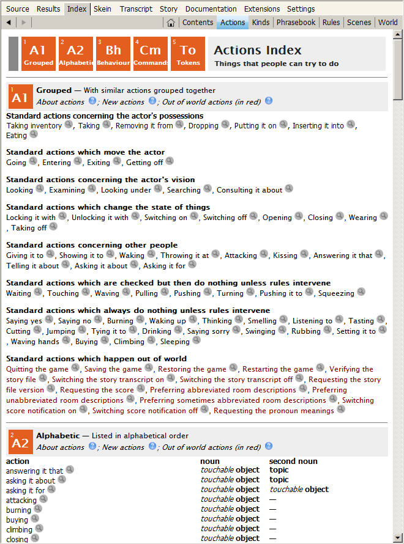
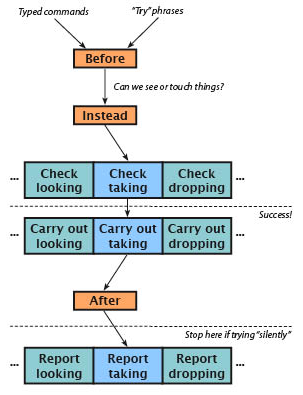

Chapter 4: Actions
An action is what happens within the game when the player types a command. Inform provides a bunch of built-in actions, but before long you’ll probably want to modify the built-in actions, or create some new ones. WI 12.7: New actions begins: “It is not often that we need to create new actions…”. In my own experience writing games, this is simply not true. Inform’s built-in actions handle many of the basic types of commands that the player may want to use, but many equally common actions are not included. Soon after I add a few objects to a new game, I begin to realize that the player may want to try all sorts of odd commands with the objects. Even if I only want to give the player an interesting “you can’t do that” message, I still need to create a new action.
As a general rule, you should try to anticipate all of the command words that your players may think to try, and write code to handle them. Your beta-testers will be a great source of feedback on this point: If you read the game transcripts they send you, you’ll probably spot a dozen or more synonyms for actions that you have implemented, plus an assortment of plausible actions that you may want to add. Some of these might even suggest alternate solutions to your puzzles. Adding a few alternate solutions is not just a courtesy to players: It also deepens and enriches the model world of your game.
Built-In Actions
From the moment you start writing your first interactive story, you’ll be able to use a handy set of actions that are built into Inform. To see the list of built-in actions, open up your game (or create a new game and add as little as a single room) and click the Go button. After the game compiles successfully, go to the Index tab and click on the Actions header. You’ll find a list of about 50 actions (see next page).
With no extra effort on your part, the player will be able to move from place to place, examine objects, pick them up, take inventory, drop objects that are being carried, put objects on top of supporters or in containers, open and close doors, wear and remove clothing, unlock or lock things that are locked, and so on.

If you click on the gray magnifying-glass button next to an action in the Actions Index, a page will open up in which you’ll learn more about that action. On the page describing an action, you’ll see a list of typed commands that can cause the action to happen and a list of rules that can affect the outcome after the action starts. This page may not list all of the exact synonyms. But there are several ways to figure out what actions are being generated by a given command word.
First, the SHOWVERB debugging command can be used in the game to display a list of the Inform 6 grammar lines that cause the action to happen. (For more on the relationship between Inform 6 and Inform 7, see What Does Inform 6 Have to Do with Inform 7?.) Here, for instance, is the output for the drop action:
showverb drop
Verb 'discard' 'drop' 'throw'
* multiheld -> Drop
* held 'at' / 'against' / 'on' / 'onto' noun -> ThrowAt
* multiexcept 'in' / 'into' / 'down' noun -> Insert
* multiexcept 'on' / 'onto' noun -> PutOn
Don’t worry too much about the picky details of that output. (Inform 6 programmers will understand it at a glance.) The main point is that 'discard', 'drop', and 'throw' are all synonyms for an action – and all three words can lead to any of four different actions (Drop, ThrowAt, Insert, or PutOn). These action names are I6 code, not I7 – an important distinction. The I6 Insert action is invoked in I7 code using the phrase “inserting [it] into.”
Second, if you scroll down on the Actions page or click the red Cm button, you’ll find an alphabetical list of commands that are available to the player. If you’re trying to find out what action(s) can be generated by a command word, such as DISCARD, you can look it up in this list. You’ll find that it says, “same as drop.” And the four listings for DROP are exactly what’s shown above in the Inform 6 code: dropping, throwing it at, inserting it into, and putting it on.
Another useful feature of Inform is the ACTIONS debugging command. In debug mode only (that’s the mode you’re using as you work on your game), giving the ACTIONS command in the game turns on some special output that reveals more about what’s going on behind the scenes in the software. Here’s an example of how the ACTIONS debugging command works:
You can see an apple here.
actions
Actions listing on.
pick up apple
[taking the apple]
Taken.
[taking the apple - succeeded]
Here we find a listing for the action (the action of taking with the apple as the noun), and also an indication that the action’s rules succeeded. Next, we’ll look at a slightly more interesting example. Here’s the action listing in the game for an absurd action, one that isn’t going to work:
wear book
[wearing the book]
(first taking the book)
[(1) taking the book - silently]
[(1) taking the book - silently - succeeded]
You can't wear that!
[wearing the book - failed the can't wear what's not clothing
rule]
The action listing reveals two things. First, the command WEAR triggers the implicit action of taking. This is because Inform assumes that the player will need to be holding an object in order to put it on. Second, while the action of taking the book implicitly succeeded, the action of wearing the book failed. Inform tells us not only that it failed, but what specific rule caused it to fail. This information could be important if we want to replace that rule. Replacing the rules in the Standard Library is an advanced topic, however. It’s touched on only briefly in this Handbook, in Chapter 10, Advanced Topics.
One of the common sources of frustration for newcomers to Inform is not knowing how to refer to the built-in actions in their code. One of the most frequent problems comes from the inserting it into action. Newcomers tend to try to refer to this action in what seems to be a natural way, like this:
But that doesn’t work, because there is no action called “putting it in.” Here’s the correct way to refer to this action:
By using the ACTIONS command and then using a command such as PUT APPLE IN BASKET in your game, you can see which action or actions are being triggered.
Using “Instead”
The easiest way to start customizing how Inform handles actions is to write a few Instead rules. We’re going to create a bubbling beaker of magic potion and then use a couple of Instead rules on it. Inform already has actions for drinking and taking. The command DRINK POTION, however, produces the output, “There’s nothing suitable to drink here,” which is not what we want in this particular case. TAKE POTION will allow the player to pick up the potion, and that might not be what we want either, if the potion is a liquid in a container. Here’s how to customize Inform’s default behavior using Instead rules:
The response above to TAKE POTION will prevent the player from picking up the potion, because the Instead rule will stop the taking action in its tracks. We could do the same thing by saying, “The bubbling potion is fixed in place”, but that produces a boring message when the player tries TAKE POTION. The code above will give a more interesting message.
Likewise, if the player tries DRINK POTION, a new message will be printed out by the Instead rule in place of the default message. Nothing will actually happen in the model world as a result of this command – but if we wanted something to happen, we could just add it to the Instead rule. In an extreme case, we might want to do something like this:
Almost anything we might want to happen in the model world can be tucked into an Instead rule like this. To understand how Instead rules work, we need to delve deeper into Inform’s action processing.
Action Processing
WI 12.2: How actions are processed has a diagram (a flowchart) that shows – as you might expect – how actions are processed. The first time I looked at this diagram, it baffled me, but it really does make sense. (See Action Processing Summary for a detailed run-through of this diagram).

When the player types a command, the game goes through a number of steps. First it makes sure it knows what the input words are, and that the command makes grammatical sense. (This step isn’t in the diagram.) If there’s a typo in the input – or even if the parser knows all of the individual words but doesn’t understand how they’re strung together – the parser will reject the input before anything happens. Assuming the parser can figure out what the words are, and that they’re in a grammatical form that the parser knows, Inform starts processing the action.
The first step shown in the diagram is Inform looking to see if there is a Before rule that might affect the action. But in fact there’s a step before this, which is also not shown in the diagram. If the action includes a noun, as most actions do – PICK UP THE APPLE, for instance – the game first checks to make sure that there’s an object in the room that can be referred to as “apple.” If the apple is in a different room, it’s not in scope. Scope checking is one of the most important things the parser does, and it happens before the Before rules are considered.
There’s an exception to this, as we’ll see in the section below on “[Any Thing]”. Inform also provides a way to add distant objects to scope. This can be useful, for example, when a large open area is defined in your code as several separate rooms. The player will expect to be able to see the beach ball after dropping it at the north end of the field, even when the player has moved off to the south end of the field. (“Indoors & Outdoors” in Appendix C shows one way to do this.)
It’s easy to write your own Before rules for existing actions – but it’s also easy to create odd bugs with Before rules. While first learning to use Inform, you should probably stick with Instead rules when you need to alter the processing of a built-in action. As the diagram in 12.2 shows, after the Before rules are considered, Inform pauses to figure out whether the objects being referred to are actually available for action processing – whether they can be touched. This is a narrower question than the question of whether an object is in scope. If an object is in a transparent container in the room, for instance, and if the container is closed and locked, the player can see what’s in the container, so objects in the container are in scope, and can be examined. (The action of examining is considered to be visually based, so you should avoid mentioning how objects feel or smell when writing their descriptions.) But the objects in the closed transparent container can’t actually be touched or taken.
Here’s the essential point: While the Before rules are being considered, Inform doesn’t yet know that the glass container is closed and locked! Here’s an example of a Before rule that may look sensible at first glance, but that will get you in trouble:
The author of this code might be trying to save the player a little work, by putting the apple into the basket automatically in response to the command TAKE APPLE. But can you see what’s going to happen? The Before rule tests several things, but it doesn’t test to make sure the apple is actually available for taking. And Inform doesn’t yet know that either, because the test for availability won’t be run until after the Before rule is considered. The result is a bug – a player who is carrying the basket can get the apple out of the glass case without unlocking or opening the case!
take apple
The glass case isn't open.
take basket
Taken.
take apple
You pick up the apple and put it in the basket.
i
You are carrying:
a wicker basket
an apple
This illustrates why Before rules can be a little treacherous. Instead rules are safer. But sometimes a Before rule will give you better results. Consider this code:
If you use an Instead rule here, Inform will perform an implicit taking action, as shown earlier in this chapter. The implicit taking action will cause the player to pick up the crown before refusing to allow it to be worn. This happens because Inform assumes that things can only be donned while they’re being held. (In the original version of the Handbook, this example referred to the eating action, but I7 has been revised so that things can more easily be eaten without first being picked up. The details are a bit convoluted, but now the implicit taking of a portable edible thing happens in a Check rule, not in a Before rule.)
wear crown
(first taking the jeweled crown)
The king has warned you not to touch his crown.
>i
You are carrying:
a jeweled crown
A Before rule will run before the implicit take action happens, so the player won’t automatically pick up the cake before changing her mind about eating it:
Note the use of the word “instead” at the end of the Before rule above. This may look odd, since we’re writing a Before rule, not an Instead rule, but it’s a convenient syntax. In this case, what “instead” does is cause the Before rule to succeed (see “Rulebooks & ‘Stop the Action’,” below), thus shutting off any further processing of the player’s command. If you forget to add “instead”, a Before rule doesn’t shut off the action processing. The action will continue.
If that doesn’t make sense yet, keep reading. It will start to make sense – and it’s important.
For technical reasons, there’s only one Before rulebook and one Instead rulebook. As an action is being processed, Inform will run through these rulebooks looking for rules that might apply. Any rule that applies might end with a “rule succeeds” line, which will shut off any further processing. If none of the Before rules that Inform thinks might apply ends with a “rule succeeds” or “rule fails” (which in this case is pretty much the same thing) or an “instead” (which is equivalent to “rule succeeds”), Inform proceeds to the Instead rulebook, and then to the Check rulebook for the specific action. Each action has its own Check, Carry Out, and Report rules. Before the Report rules for the action are considered, though, Inform dips into the After rulebook (again, there’s only one, though it might contain dozens of rules applying to different actions). This is what WI 12.2's action processing diagram is illustrating. If no After rule shuts off the action processing, the Report rules for the current action will be considered.
This cycle – Check, Carry Out, Report – is the nuts and bolts of how Inform processes actions. They’re what happens with built-in actions that are defined in the standard library. Before, Instead, and After are mostly for the author to use, though Inform has some built-in Before rules. You can also write your own Check, Carry Out, and Report rules, as we’ll see later in this chapter.
In a Check rule, Inform checks whether the action makes sense. The eating action (built-in) gives a good example of the use of a Check rule. If you haven’t told Inform that an object is edible, when the player tries to EAT it, the “can’t eat unless edible rule,” which is a Check rule for the eating action, will print out the message “That’s plainly inedible.” This rule will then fail (it ends with the line “rule fails”), which will stop Inform from going on to the Carry Out rulebook for the eating action.
If no Check rule gets in the way, the Carry Out rules will run next. The purpose of a Carry Out rule is to change the model world in whatever way is needed. In the case of the eating action, for instance, the Carry Out rule removes the edible object from play – because, obviously, it has just been eaten. Finally (unless an After rule has gotten in the way), the Report rule for the action will tell the player what has happened.
If we use the RULES debugging command to turn on reporting of rules, and then EAT something that we’ve declared as edible, we’ll see exactly which rules are running:
eat apple
[Rule "declare everything initially unmentioned rule" applies.]
[Rule "announce items from multiple object lists rule" applies.]
[Rule "set pronouns from items from multiple object lists rule"
applies.]
[Rule "before stage rule" applies.]
[Rule "instead stage rule" applies.]
[Rule "investigate player's awareness before action rule"
applies.]
[Rule "player aware of his own actions rule" applies.]
[Rule "check stage rule" applies.]
[Rule "can't eat unless edible rule" applies.]
[Rule "can't eat clothing without removing it first rule"
applies.]
[Rule "can't eat other people's food rule" applies.]
[Rule "can't eat portable food without carrying it rule"
applies.]
[Rule "carry out stage rule" applies.]
[Rule "standard eating rule" applies.]
[Rule "after stage rule" applies.]
[Rule "investigate player's awareness after action rule"
applies.]
[Rule "report stage rule" applies.]
[Rule "standard report eating rule" applies.]
You eat the apple. Not bad.
[Rule "last specific action-processing rule" applies.]
[Rule "A first turn sequence rule" applies.]
[Rule "every turn stage rule" applies.]
[Rule "A last turn sequence rule" applies.]
[Rule "notify score changes rule" applies.]
This rather intimidating list of rules is quite a bit longer than it was in earlier versions of Inform, because Inform is more careful than it used to be in its attempts to produce a realistic world model. On scanning the output above, you may think it’s odd at first that the “can’t eat clothing without removing it first rule” applies, since the apple is not clothing – but in this situation, “applies” doesn’t mean that the rule did anything. (The fact that Inform understands the concept of edible clothing is a little bizarre, but we won’t worry about that.) All that’s happening during the processing of this command is that Inform is consulting those rules and then rejecting them. The result of the “standard eating rule” (a Carry Out rule) is that the apple is removed from the model world. It’s gone, because the player has eaten it. The “standard report eating rule,” a Report rule, then tells the player what has happened.
There are several ways for the author to get in and alter Inform’s action processing. You’ve already seen a couple of examples. For more, see the section on “Altered Actions,” below. Before we get to that, let’s take a closer look at how action processing rulebooks work.
Rulebooks & “Stop the Action”
When a game is running, Inform processes actions using rulebooks. A rulebook is, as you might guess, a collection of rules. You can create your own rulebooks for any purpose at all if you want to, but that’s an advanced programming concept, and it isn’t covered in this Handbook. For many games, you won’t need to. The rulebooks built into Inform can handle most types of action.
When your game is compiled, all of the Before rules – in your own code, in Inform’s built-in library, and in any extensions that you’re using – are packed into the Before rulebook. Likewise, all of the Instead rules are packed into an Instead rulebook. (For now, we’re not going to get into the question of how Inform decides what order to put the rules in. If you want to know more about this, you can read Chapter 19 of Writing with Inform, “Rulebooks”.) And all of the After rules are in a single After rulebook. But each action (for example, taking, looking, and going) has its own Check, Carry Out, and Report rulebooks.
Every rule in every rulebook ends in one of three ways: success, failure, or no decision. As an action is being processed, Inform runs through the rulebooks – Before, Instead, Check, Carry Out, After, and Report – consulting all of the rules in the order that they’re listed in the rulebook. It goes through the rules until one of the rules ends in success or failure. At that point, Inform knows that the action has been handled, and it stops.
Every rulebook has a default outcome for the rules that are in the rulebook. This is one of the key concepts in Inform authorship. If you write a new Instead, Before, After, Check, Carry Out, or Report rule and don’t tell Inform what outcome your specific new rule will have, it will use the default outcome for that rulebook. This is important, because it affects how you write new rules.
The default for the Before, Check, and Carry Out rulebooks is to make no decision. So if you write a Before rule and don’t tell Inform that the rule has succeeded or failed, Inform will look at your rule, do whatever it says to do, and then go right on processing the action. The After rulebook, however, has a default of success, and the Instead rulebook has a default of failure. So when you write a new Instead or After rule, if you don’t say otherwise, your rule will cause action processing to stop.
The phrase “continue the action” is one of the first phrases I learned when I started writing new rules. It means exactly the same thing as “make no decision”. You can use either of these two phrases. Here’s a simple example:
If the player is not wearing the insulated gloves, the outcome of the Instead rule will be failure (though in this case it hardly matters, as the game-ending rules will take over). If the player is wearing the gloves, this Instead rule will make no decision, and action processing will continue – most likely with the rules in the Check Taking rulebook. (Since the live wire is probably attached to something at its other end, and thus can’t be carried around, this example doesn’t actually make a lot of sense, but we’ll ignore that.)
The opposite of “continue the action” is “stop the action”. I’ve been in the habit of using this – but I’m going to have to get out of the habit. Most of the time, it works just fine, but once in a while it can get you in trouble. Let’s look at why.
Here’s a simple game, for testing, that shows what can happen. I like putting a red button in the room in a test game so that I can test anything I like using the command PUSH BUTTON. In a real game, the rule shown below for taking the sponge would be more complex; there’s no need to ever do it as shown here. But the result (when the game is being played) might be similar to what you’re seeing if you have a mysterious bug in your code.
For technical reasons, it’s necessary to test using the odd phrase “we have taken the sponge”. Testing “if the player has taken the sponge” won’t compile. But the point is this: If the Before rule (“Before taking the sponge”) ends with “rule succeeds”, as shown above, running the test by typing TEST ME will reveal that we have indeed taken the sponge. On the other hand, if you comment out “rule succeeds.” (by putting square brackets around it) and uncomment “stop the action.” (by removing the brackets), when you run TEST ME you’ll see that apparently the player has not taken the sponge, even though it’s now in the player’s inventory.
That, in a nutshell, is why using “stop the action” is a bad idea. When you use “rule succeeds” or “rule fails” Inform does a little housekeeping behind the scenes. In this case, the housekeeping includes making note of the fact that the sponge has been taken. If you use “stop the action” the housekeeping never happens, so Inform’s record-keeping will include a mistake.
Still not convinced? Here’s another quick example.
If all we want is for Steve to pick up the pitchfork, we don’t need an Instead rule. The Persuasion rule will cause him to carry out the action. In this example I’ve added a line about an imaginary unicorn, because it’s a quick example of why you might want to use an Instead rule rather than letting the standard library handle Steve’s action. The code seems very straightforward, but there’s a problem. Inform thinks that the action of Steve taking the sponge failed, because failure is the default outcome of the Instead rulebook. Here’s the output in the game:
steve, take the pitchfork
Steve scoops up the pitchfork. This evidently makes the unicorn very
uneasy.
Steve is unable to do that.
Steve is now carrying the pitchfork, but the game has printed out an extra message giving the player bad information. To avoid this, we need to make sure the Instead rule succeeds:
When we add “rule succeeds”, Inform knows that the action succeeded, so no default message about the action’s failure will be printed out. These examples show that the action processing rulebooks have default outcomes, and that it’s important to know what the default outcomes are.
Three Types of Actions
We can separate actions into three main categories, depending on how many nouns (objects) the action applies to. Some actions take no nouns, some take one noun, and some take two. Another type of action take topics (that is, simple text) instead of a noun. (See Actions with Topics.)
Commands like SLEEP and WAIT stand by themselves. It would make no sense at all to say SLEEP THE APPLE. Sleeping on or in something, such as a bed, would make sense, but the command SLEEP IN BED would trigger a different action (not the sleeping action but the sleeping in action), and you’d have to create that action yourself, because Inform doesn’t include it by default.
As this little digression should show, the same verb (in this case, “sleep”) can trigger two or even three different actions, depending on how the player’s input is phrased, and in particular depending on how many nouns are used in the command.
Commands like PICK UP THE APPLE and BOUNCE THE BALL take one noun. Commands like PUT APPLE IN BASKET and HIT BALL WITH STICK take two nouns. Two nouns are the upper limit; there’s no easy way in Inform to create a command that uses three nouns. Nor is there much reason to want to do so. The best advice I’ve read on this subject is, “If you think you actually need to create an action that requires three nouns … think about it some more.”
A possible edge case arises in the handling of objects that can’t be touched. For instance, you might want your game to allow a command such as PUT RED-HOT METAL IN WATER BUCKET USING TONGS. But such a situation can be adequately handled by implementing PICK UP METAL WITH TONGS followed by PUT METAL IN BUCKET, using suitable new rules to make sure that the action of inserting the red-hot metal object in the water bucket can only happen if the metal is already in the tongs.
While processing the player’s command, Inform refers to the first noun in the input simply as the noun. The second noun is referred to as – you guessed it – the second noun. In writing our own code, we can test the values of noun and second noun if we need to, like this:
In this case, we might be better off writing an Instead rule that simply refers to “inserting the apple into the basket”. But you’ll sometimes find it useful to write tests such as, “if the second noun is the basket”.
The second and third categories above use objects – what Inform calls things. But you can’t refer to “the thing” or “the second thing” in processing an action. The word “noun” is the tool for the job.
Creating New Actions
To create a new action, we need to do three things:
- We give the action itself a name, so that we’ll be able to refer to it in our code.
- We tell Inform exactly what forms of input will cause the action to happen, using Understand rules.
- We write some code that tells Inform exactly what to do when the action happens. (This would include both things that happen if the action succeeds, and messages that will print out if the action fails for some reason.)
Chapter 6 of the Recipe Book, “Commands”, has a lot of good information on how to create your own actions. If you haven’t read this yet, give it a look.
To illustrate the various possibilities for creating actions, we’re going to create an action that will happen when the player uses the verb PAINT. Painting is not an action that’s built into Inform, but painting something might be a way of solving a puzzle in your game.
The most basic form of this action is one that takes no nouns at all – the bare command PAINT. We can create it this way:
If you compile this game and test it, you’ll see the following output:
paint
You don't have any paint.
paint the fence
I only understood you as far as wanting to paint.
The painting action as we’ve defined it does nothing at all: The check rule has no exceptions. We could, however, make an exception if we wanted to, using an Instead rule. For instance, we might do this:
Most often, we’d expect the player to want to paint some particular thing, so the example above is included mainly to illustrate the simplest way to create a new action, one that has no noun. We’ve defined the action (“Painting is an action applying to nothing.”) We’ve told Inform what inputs will trigger the action (“Understand “paint” as painting.”) And we’ve written a Check rule that will run when the painting action is being processed. Because we haven’t defined any grammar that would match the command PAINT THE FENCE, the parser reports that it has failed: “I only understood you as far as wanting to paint.”
It’s important to remember that by default, a Check rule does not stop the processing of the action. After the Check rule runs, the Carry Out, After, and Report rules for the action will all run – unless one of them stops the process. To prevent this, if you want action processing to stop after your check rule, tack the word “instead” on at the end of the say phrase you’re printing out in the Check rule. As you might guess, this causes the Check rule to operate more like an Instead rule, and Instead rules fail by default, so after your Check rule has run, action processing will halt.
Next, let’s look at how to paint something. This example is going to get complicated, because in order to actually do any painting we’ll need, at the very least, a paintbrush, and quite likely a can of paint as well. But we can start by creating the action we’ll need. Remember, we’ve already created an action called painting (which applies to nothing), so we can’t call our new action painting. Let’s call it paint-applying:
The odd-looking stuff with square brackets in the Check rule’s say line cleverly formats the output text as singular (“The wooden fence looks fine the way it is.”) if the noun is singular, and as plural (“The galoshes look fine the way they are.”) if the noun is plural.
As before, this action does nothing except print out an error message. But now PAINT THE FENCE will produce a sensible output.
The essential thing to notice is the use of the grammar token “[something]” in the action’s Understand sentence. The token “[something]” will match any object that is in scope – that is, any object that is visible to the player character. This is the heart of creating new actions in Inform.
The phrase “and requiring light” in the definition of the action is useful mainly if your game includes any dark rooms. Painting is obviously an action that requires light, so if the player is in a dark room we want to make sure she can’t paint anything, even if she does have all of the necessary painting implements.
The next thing we need to do, of course, is to add a painting implement, specifically a paintbrush, so that the player can type PAINT FENCE WITH PAINTBRUSH. For this tutorial, I’m not going to bother adding a paint can that the brush needs to be dipped into. This brush comes fully loaded with paint, which is not very realistic, but it will simplify the code in the examples.
When creating an action that requires two nouns, it’s a very good idea to give the action a name that includes “it with”, “it on”, “it under”, or some similar phrase. In this case, we’re going to create an action called “painting it with”. Giving the action this type of name – “xxxxing it with” – is not required, but if you forget to do it, your code will be hard to read, and you’ll probably have more bugs to fix. In some cases, you might need to use a different preposition. For instance, you might need to create an action called “unfastening it from” or “placing it near”.
Here is a fairly complete bunch of code that includes all three of our new painting actions. As you’ll see, the Check rule has a fairly deep and tangled set of indentations. If you’re trying out this game, you’ll need to copy these with care. Even better would be to develop an understanding of how indentation works in Inform.
This code is written in a way that assumes the player will never need to paint anything except the wooden fence. If several objects in the game can be painted, it would have to be changed. In that case, we might want to use Instead rules for each paintable object rather than Carry Out and Report rules. The code could be expanded in other ways. For instance, we might want to change the color of the fence after it’s painted. But this example should give you a better idea how to create a new action.
You might notice a couple of other things too. We’ve allowed the fence to be either painted or unpainted. This is a new property we’ve created, which exists only for the fence object. This is so we can give the player an error message if he tries to paint the fence more than once. We’ve added some vocabulary words to the wooden fence object (“freshly” and “painted”) that can only be used by the player after the fence is painted.
We’ve also told Inform that the printed name of the fence (the name printed out when the game runs) depends on whether it has been painted. Finally, the room description refers to “[wooden fence]”, so the room description will change after the fence is painted.
You may want to study the logic of the Check rule for painting it with. It’s important to get the if-tests in a sensible order. The first question is, is the second noun something other than the paintbrush? If so, print an error message and stop (using the “instead” to stop the action processing). If the second noun is the paintbrush, we then ask, has the player neglected to pick up the paintbrush? (It might be locked up in the glass case, or just lying on the ground.) Next, we check whether the noun is something other than the fence. If not – if the player is indeed trying to paint the fence – then the fourth question to ask is, is the fence painted already? Only if the answers to all four of those questions are “No” will the action processing move on to the Carry Out rule.
If these four questions are in some other order, the output might not be so sensible. If we put the question of whether the fence is painted first, for instance, this output could happen:
paint the bucket with the apple
You already did that.
Trust me, players will sometimes try absurd commands like that, just to see what will happen. If they’re beta-testing your game, that’s what you want them to do. When creating a new action, it’s a good idea to think about all of the silly things a player might try. What happens if she tries to perform the action on herself? On another character? On something she’s wearing?
I tested the code above at least a dozen times while writing it. I tried all of the absurd inputs as I could think of, such as PAINT FENCE WITH APPLE, just to see what would happen. When writing a new action, you’ll want to go through quite a bit of testing yourself before letting your trusted team of testers try torturing the game.
[Any Thing]
Earlier in this chapter, I explained that the first step in processing an action is to make sure the object or objects that the player is talking about are in scope – that is, that they’re visible in the room. This happens because the grammar for actions (the Understand rule) normally uses the token “[something]”. The code for the new action called paint-applying, a page or two back, gives a good example.
If we want to bypass scope checking, we can change this to the token “[any thing]”. The token “[any thing]” puts every object in the game in scope, no matter what room it’s in (or, for that matter, if it’s nowhere). Please don’t bypass scope checking for casual reasons, because it will make a mess of the realistic effects that Inform tries to create. Once in a while, though, it may be useful. For instance, you could give your players more or less the same power as the debugging PURLOIN command, like this:
Note the use of “one visible thing” in the definition of the acquiring action. When writing an action that can apply to “[any thing]”, you need to do this. Oddly enough, “one visible thing” is a more general term than “one thing.” In effect, “one thing” means “one thing that the player can both see and touch,” while “one visible thing” means “one thing that is visible (but we don’t care whether the player can touch it or not)”. If you fail to specify “one visible thing”, your magic grab-anything command will fail: The parser will complain that the player is unable to reach into a distant room. In other words, the desired object will fail the touchability test.
Addendum
It’s generally not useful to use a token with “[any]” without the grammar line in question being associated with a visible thing, but it’s not necessary. And “visible thing” has nothing to do with visibility: it could mean literally any object –, in or out of scope, on-stage or off-stage. Its domain is thus limited only by the grammar line. Unless you’re writing some sort of not-for-release debugging command, you almost certainly do no want to have an action that applies to a visible thing associated with a grammar line with “[any thing]”… at least not without an adjective limiting the selection. For instance, Approaches by Emily Short uses Understand “go to [any visited room]” with an action applying to one visible thing to implement a command letting the player return to a visited room.
The acquiring action might make a reasonable magic spell if your player character is a powerful wizard, able to summon distant objects, but you’ll want to be careful how you write the Check rule for it. Several things can go wrong if you let the player use this type of spell indiscriminately. The previously discussed “[any thing]” token is also useful for creating topics of conversation – abstract objects that are never anywhere in the model world. But if you’re doing this, and also using “[any thing]” to magically manipulate objects that do appear in the model world, you need to make sure the Check rule handles all of the possibilities. If you’ve created a SHAZAM spell that can acquire distant objects and “India” exists not as a real physical object in the model world but simply as an object that can be talked about, you don’t want the naughty player to be able to do this:
shazam india
With a swirl of sparkling light, India appears in your hands!
What’s worse, SHAZAM ME will produce a run-time error.
For an example that might be more useful, let’s suppose we want the player to be able to dig a hole. We’ll give the player a shovel, and we’ll assume the setting is outdoors. (If you have both indoor and outdoor rooms, you’ll need to do some extra checking before you let the player dig a hole!) The problem we have to solve is that the hole isn’t in scope until after the action takes place. There isn’t any hole in the room until the player digs it, so how can we arrange matters so that the player can use the command DIG HOLE?
The way to solve this little problem is to use “[any thing]”. We’ll create the hole offstage and then move it into the room when the player gives the command. Here’s a simple game that shows how to do this:
Same Action, New Results
Some puzzles are designed to force the player to take a given action several times. For instance, the player might be required to knock on a door three times before someone will open the door. To do this in Inform, you would most likely use Instead rules and the phrases “for the first time,” “for the second time,” “for the third time,” and so on. It’s important also to write a default rule for handling the action if it’s attempted more often than you’ve explicitly allowed for. In the example below, the Report rule for our new knocking on action takes care of this.
If you write a puzzle like this, it’s important to give the player a clue that the action should be repeated. If the first response to KNOCK ON DOOR is a bare “Nothing happens” or some similar phrase, the player is unlikely to try the action again.
Redirecting an Action
Situations can arise in which a game needs to respond to a particular command by turning it into a different command. The tool for this is, as you might guess, the Instead rule. When the player tries one command, an Instead rule intercepts it and turns it into a different command.
Here’s a simple example. (For a slightly more complex example, see the Mr. Potato Head example.) The player is in a room called At the Foot of a Tree. Perched in the Tree is a separate room above it. The tree itself is scenery in the first room, and we want the player to be able to climb the tree. The command CLIMB TREE will result in the same action as the command GO UP:
It may seem that we could just as easily have said, “Instead of climbing the tall tree: now the player is in Perched in the Tree.” And indeed, in the example above, that would produce pretty much the same result (although there would be a missing empty line in the output between the player’s command and the room name). But redirecting the CLIMB TREE action to the GO UP action allows us to handle more complex game situations in a graceful way.
Let’s suppose, for instance, that the player may be carrying something so heavy that it would make climbing the tree difficult or impossible. If we’ve redirected CLIMB TREE to GO UP, we only need to test this condition once. If CLIMB TREE and GO UP remain separate actions that send the player to the same destination, then we’ll have to test what the player is carrying in two different pieces of code, which makes the code harder to write and harder to debug.
Because the Instead rule shown above redirects the climbing action to the going up action, turning the tree-climbing action into a puzzle (absurdly easy, but a puzzle for all that) requires very little effort. After the code above, we add the following:
Now the player will see the same “You’ll never be able to climb” message, whether he typed CLIMB TREE or UP.
Inform allows you to test what action the player is attempting, but the syntax is a little tricky. For an example that shows how to do it, see Restraints.
Actions with Topics
Inform provides an action called consulting it about. By default, this does nothing except print out a message that says, “You discover nothing of interest in [the noun].” The results, if the player tries LOOK UP EXPLOSIVES IN MRS SMITH, are rather comical, because Inform seems to be implying that there is actually a way of looking things up in Mrs. Smith. We’ll want to fix that. Nonetheless, we can use this action to create an encyclopedia – or for that matter, a computer terminal – in which the player can look up whatever topics we like. Here’s an encyclopedia:
The main part of this code uses a table. Tables are Inform’s way of keeping large amounts of data organized; for more on tables, see Tables. The main thing you need to know about tables, at the moment, is that they contain rows and columns, and that the items in each row are separated by Tab characters. There is a single return character at the end of each row.
Note: Tab characters are not kept by a copy-paste action if you select the code above in Adobe Reader (Windows) or Preview (Mac) and copy it into Inform. If you do that, you’ll need to replace the Tabs yourself, in order to get the game to compile. In addition, extra return characters may be added when you copy and paste text from the Handbook. These returns will have to be stripped out after you copy the example into Inform’s IDE.
With the code shown above, the player can CONSULT ENCYCLOPEDIA ABOUT SWORDS or LOOK UP WEAPONRY IN ENCYCLOPEDIA. Both commands lead to the consulting it about action, and from there to the entry in the article column in the table. If you look at the entries in the topic column for the table, you’ll find that each entry has several texts separated by the word or. It’s important to spell out all of the variations you think your player might try to use. The last row in the table, for instance, has no entry under topic for “weapon”, because I forgot to add one. If the player tries to LOOK UP WEAPON IN ENCYCLOPEDIA, the default response (“…there’s nothing in the encyclopedia on that topic”) will be printed out. In this case, that would be a misleading response.
The last two Instead rules in this example provide better responses for when the player tries to look up a topic in something other than the encyclopedia.
Action Processing – Summary
The table below (which was suggested by Michael Callaghan) shows all of the stages Inform goes through when processing a player’s command – or rather, all of the stages Inform normally goes through. The action processing can be stopped at every stage. If it’s stopped at a given stage, none of the later stages will be reached.
Addendum
Action processing can be stopped at every stage except Carry out. “stop the action” in a Carry out rule stops only the Carry out rulebook, after which action processing would moves on to the After rules.
The table below has been reformatted and so has diverged from Michael Callaghan’s suggestion.
| Parsing | ||
|
Comment |
Outcome |
How to change |
|
The player’s input is checked to make sure it makes sense – that all of the words are spelled correctly and so on. |
If the input makes sense, Inform 7 next goes on to check Scope. If the input doesn’t make sense, an error message is displayed. |
It’s possible to modify how the parser understands the player’s input, but this is an advanced topic not covered in the Handbook. For details on how to use the “After reading a command” feature, see WI 20.6, especially Example 412. |
| Scope | ||
|
Comment |
Outcome |
How to change |
|
Where the action involves one or more things, Inform 7 checks that the things referred to are in scope. With some exceptions, things that are in scope are in the same room as the player. |
If the things are in scope, Inform 7 checks the Before rules. If the things are not in scope, an error message is displayed. |
There are two ways in which scope can be changed. The first, discussed in this chapter, is where the action affects “[any thing].” The second is to write some special code that will place something in scope when it would otherwise not be. This is an advanced topic not covered in the Handbook. For examples, you can search the Documentation for “scope,” noting especially Example 209, Fate Steps In, and Example 226, Four Cheeses. |
| Before rules | ||
|
Comment |
Outcome |
How to change |
|
All Before rules are contained in a single rulebook that Inform consults to see if any of them applies to the action that is now being processed. Before rules are useful where you want to carry out an action before Inform 7 goes on to the next two stages (touchability and implicit actions). |
The default outcome after consulting the Before rules is to make no decision, so that Inform 7 proceeds to consider touchability. If any of the Before rules being considered by Inform specifies that the action has succeeded or failed, Inform stops processing the action. |
To indicate that a Before rule has succeeded (in doing something) and stop processing the action, use “rule succeeds”. To indicate that a Before rule has failed and stop processing the action, you can use “rule fails” or “instead”. |
| Accessibility | ||
|
Comment |
Outcome |
How to change |
|
Inform checks that even if something affected by the action is in scope (see above), it needs to be visible and touchable if the action involves touching it. If an object is in a closed glass container, for instance, the player will be able to EXAMINE it but not TAKE it. |
If the thing cannot be touched, if it’s hidden, or if the room is dark, an error message is displayed. If the thing can be touched, Inform then goes on to consider any implicit actions that may be called for. |
The easiest way to bypass the accessibility test is to intervene using a Before rule. |
| Implicit Actions | ||
|
Comment |
Outcome |
How to change |
|
Certain verbs trigger an implicit action. For example, the EAT command causes an implicit taking action if the item to be eaten is portable and is not being held by the player. |
If the implicit action fails, an error message is displayed. If the implicit action succeeds, Inform goes on to consider any Instead rules that may apply. |
If you don’t want the implicit actions to be triggered, the easiest way to do this is to intervene using a Before rule. |
| Instead | ||
|
Comment |
Outcome |
How to change |
|
All Instead rules are contained in a single rulebook that Inform consults to see if any of them applies to the action being carried out. Instead rules are the most useful rules for changing the results of actions (both those in the standard rules and those you’ve created in your own source code). |
The default outcome for the Instead rulebook is failure. If any Instead rule applies, the action processing stops with the outcome “rule failed” unless you add “continue the action” or “make no decision” at the end of the Instead rule. If no Instead rules apply, Inform next considers the Check rules. |
If we want an Instead rule to stop the action with the result that the action succeeded, we can use the words “rule succeeds”. If we want action processing to continue, we can use the words “continue the action”. |
| Check rules | ||
|
Comment |
Outcome |
How to change |
|
Every action has its own Check rulebook. If you are creating new actions, this is where you will set out any preconditions that apply to the action being carried out. For simple actions, it is possible to include all of the actions rules in one Check rule. |
The default outcome from the Check rules is to make no decision and proceed to consider the Carry out rules. |
To specify that a Check rule has succeeded and stop processing the action, you can use “rule succeeds”. To specify that a Check rule has failed and stop processing the action, you can use “rule fails” or “instead”. |
| Carry out rules | ||
|
Comment |
Outcome |
How to change |
|
Every action has its own Carry Out rulebook. If you’re creating new actions, you’ll usually want to write a Carry Out rule that handles what’s supposed to happen. |
The default outcome from the Carry Out rules is to make no decision and proceed to consider the After rules. |
Normally, you should not need to change the default outcome from the Carry Out rules. To specify that a Carry Out rule has succeeded and stop processing the action, you can use “rule succeeds”. Once the Carry Out rules have been reached, the action is considered by Inform to have succeeded, so it make no sense to use “rule fails” or “instead” within a carry-out rule. |
| After rules | ||
|
Comment |
Outcome |
How to change |
|
All After rules are contained in a single rulebook that Inform consults to see if any of them applies to the action being carried out. After rules are useful where you want to make other changes to the world after the action has succeeded. |
The default outcome for the After rules is success. If an After rule applies, Inform stops processing the action. If none of the After rules applies to the action, Inform proceeds to the final stage of action processing and considers the Report rules. |
You won’t often need to change the default outcome of an After rule. But if you want Inform to go on to the Report rule, end your After rule with “continue the action”. |
| Report rules | ||
|
Comment |
Outcome |
How to change |
|
Every action has its own Report rulebook. When you create new actions, write a Report rule to print out the messages that will be displayed to the player if no preceding rule has succeeded or failed. |
The default outcome for the Report rules is success. |
As this is the last stage of processing the action, it is not appropriate to use “rule fails”, “rule succeeds” or “instead”. In rare cases, you may have two Report rules that both apply to one action. You can use “continue the action” in the first of the rules so that the second Report rule will run. |
Addendum
What’s described here as “Implicit Actions” is the effect of the Carrying requirements rule: if an action’s definition requires one or more carried things and the actor isn’t carrying the thing specified, an implicit take is attempted. For the Standard Rules’ actions, this may happen during any of Giving, Showing, Throwing, Wearing, Locking, or Unlocking.
However, Eating, Taking Off, Inserting it into, and Putting it on may also cause an implicit take, but not as an effect of the Carrying requirements rule: for them it occurs within their Check rules, thus after the Instead rules are run.
So Instead rules for Giving, Showing, Throwing, Wearing, Locking, or Unlocking can count on the actor carrying the thing (or things) needed, or the action would have stopped before reaching them. Instead rules for Eating, Taking Off, Inserting it into, or Putting it on shouldn’t assume the actor is carrying the thing: the actor may or may not be.